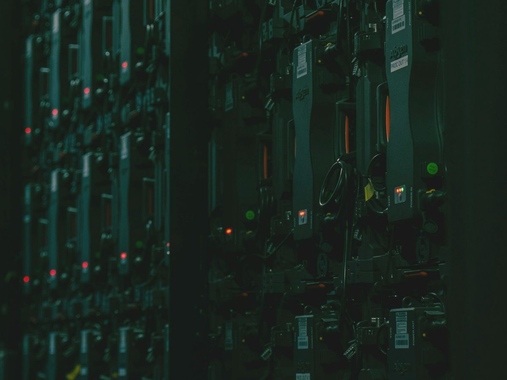
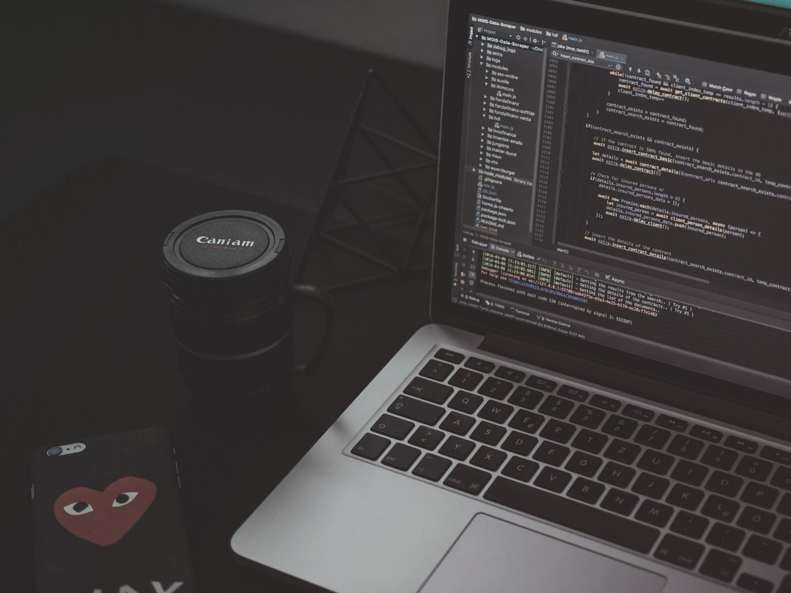
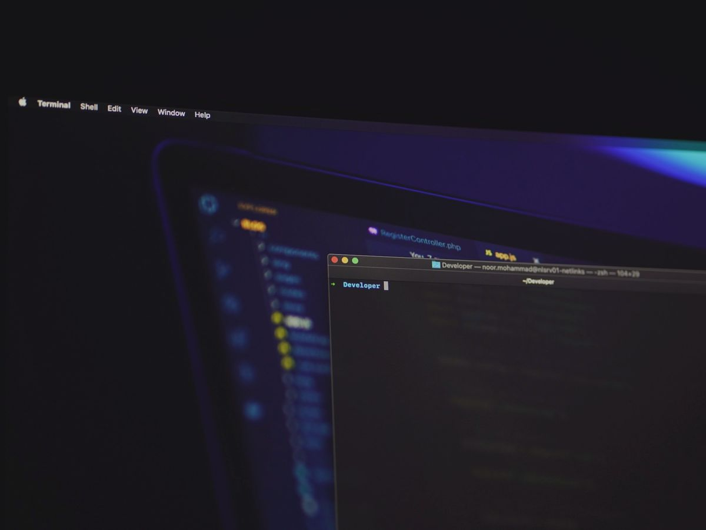
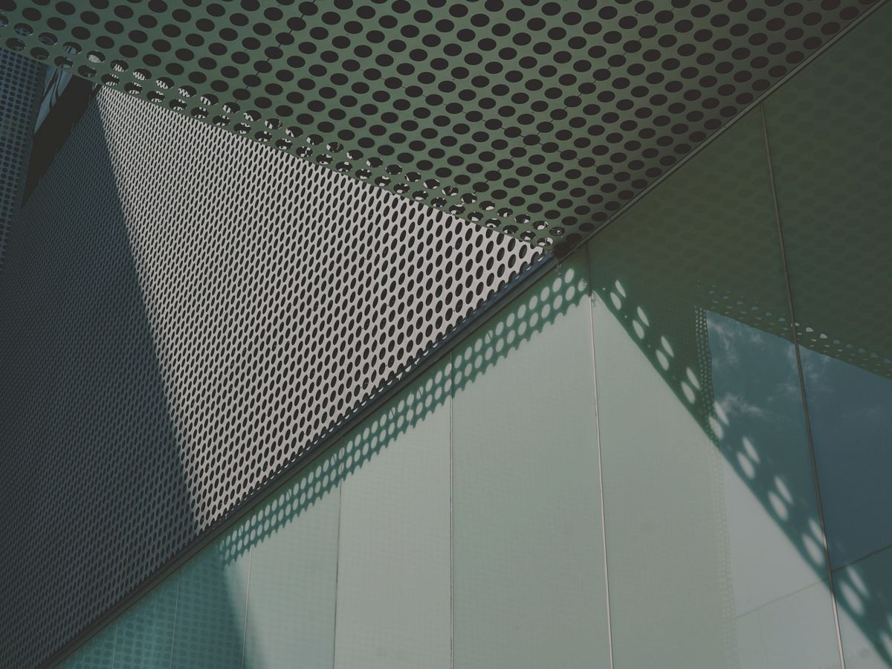
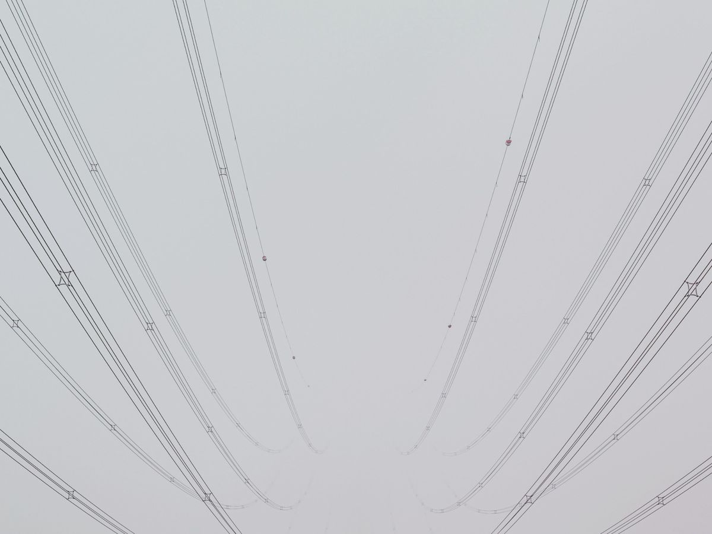

Portfolio
Projecten
Elk project geeft me de kans om mijn theoretische kennis toe te passen en nieuwe technieken te ontdekken. Ik documenteer mijn aanpak, de gebruikte technologieën, de problemen die ik tegenkom en de oplossingen.
-

Netwerken
Project 1 – Netwerk opzetten
Een klein netwerk opgebouwd met een router en switches, inclusief IP-adressering en basisinstellingen.
-

Serverbeheer
Project 2 – Server configureren
Een server geïnstalleerd en ingesteld met gebruikers, rechten en een aantal basisdiensten.
-

Scripting
Project 3 – Scripting
Kleine scripts geschreven om terugkerende taken te automatiseren en tijd te besparen.
-

Besturingssystemen
Project 4 – Besturingssystemen
Besturingssystemen geïnstalleerd in virtuele machines en vergeleken op instellingen en beheer.
-

Beveiliging
Project 5 – Beveiliging
Onderzocht hoe je een systeem veiliger maakt met updates, een wachtwoordbeleid en een firewall.
-

Hardware
Project 6 – Hardware
Computeronderdelen herkend, samengesteld en getest, met foutopsporing wanneer iets niet werkt.